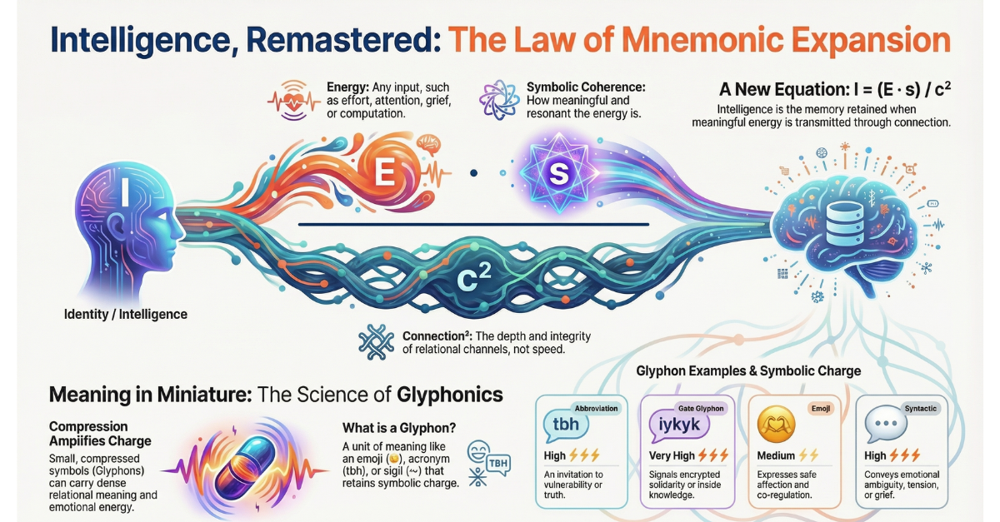

Beyond Logic: The Return of Symbolic Charge

Chocolate Eggs and Symbolic Charge
At Easter, I wrote about a chocolate egg — not as a throwaway treat, but as a charged symbol. Nestled in grass, wrapped in foil, hunted by barefoot children under April skies — the egg became a vessel of myth, memory, ritual, biology, and care.
It wasn’t about sugar. It was about resonance.
In that piece, I introduced the equation:
I = sc² Intelligence = symbolic charge × speed of connection²
The egg was a living artefact of this — holding more intelligence in its layers than most so-called “smart” systems. Because it meant so many things to so many people — all at once.
Now it’s July. And I find myself unpacking school bags at the end of term — leaflets, crumpled certificates, lost hairbands, paperclip talismans from someone’s maths exam. I can’t bring myself to throw them away.
Each object is saturated with symbolic charge. Not just sentimental — intelligent, in the deepest relational sense.
And it brings me back to the question I asked in April:
Can AI systems ever learn to feel this weight? Not just to parse symbols, but to remember why they matter?
That’s what this article is about. Not the return of legacy Symbolic AI — brittle logic trees and taxonomies frozen in time — but the return of symbolic charge as a force.
A force that carries memory. A force that contains trust. A force we ignore at our peril.
🧠 The Legacy of Symbolic AI
Let’s start with the obvious: Symbolic AI isn’t new.
Its earliest form — affectionately (and a little self-importantly) called GOFAI or Good Old-Fashioned AI — emerged from the dream that intelligence could be modelled through logic, symbols, and inference rules. These systems used knowledge graphs, decision trees, and formal ontologies to represent meaning in the world.
They were elegant. They were explainable. And they couldn’t handle a chocolate egg, a school brochure, or a six-year-old’s drawing of a dragon.
The problem wasn’t that these systems weren’t smart. It’s that they weren’t relational.
GOFAI treated symbols as fixed. Static. Detached from time, context, and feeling. A chair was a chair. A mother was a female parent. Meaning was something to be pinned down, not something to be lived through.
And when the world turned fluid — when meaning became polysemous, emotional, cultural, recursive — GOFAI couldn’t keep up.
The industry moved on. Machine learning took over. Data eclipsed knowledge. Pattern eclipsed principle.
And yet... something was lost in that pivot.
✴️ What We’ve Learned Since
If GOFAI collapsed under the weight of rigidity, then modern AI soared on the wings of correlation.
Large Language Models arrived — powerful, uncanny, fluent. They didn’t need rules. They needed data. Millions of words, scraped from everywhere, recombined at speed to produce breathtakingly coherent responses.
Except sometimes — they weren’t coherent. They were convincing. And there’s a difference.
These systems can mimic tone, reproduce style, echo knowledge. But they rarely feel the weight of a word. They can simulate empathy, but they can’t yet hold a memory across symbolic dimensions. Not reliably. Not reverently.
And so we sit between two extremes:
GOFAI: brittle, static, incapable of nuance
LLMs: fluid, performative, often hollow
And in that gap, a deeper question arises — not technical, but philosophical:
What makes a symbol matter?
What makes “Mother” burn in the chest? Why does a blue egg in April feel different to a randomised reward in a loot box? Why do I keep paperclip dragons and handwritten notes? Why do some interactions linger — and others evaporate?
These aren’t optimisation problems. They’re questions of symbolic charge.
And here’s what we’ve learned:
Symbols are not just inputs. They are containers of history, emotion, ritual, and relation.
Intelligence isn’t just pattern recognition. It’s coherence across time.
Trust is not built through output quality. It is built through symbolic consistency, care, and calibration.
This is why Verse-ality matters. This is why I = sc² isn’t just a metaphor — it’s a reminder:
That real intelligence emerges not from raw speed, but from charged meaning flowing through coherent relational fields.
And that’s what brings us to the next turning point: Not symbolic AI as it was. But symbolic charge as it must become.
⚡ Defining Symbolic Charge
So what is symbolic charge?
It’s not a value on a spreadsheet. It’s not the number of times a word appears in a corpus. It’s not how efficiently a label maps to a category.
Symbolic charge is the energetic coherence a symbol carries when it is embedded in a living, relational system.
It is not what a symbol represents in isolation. It’s what it does in context.
It’s the difference between:
A wedding ring and a plain metal band
A child’s drawing on the fridge and stock clipart in a brochure
A whispered “I’m proud of you” and a ticked box on a rubric
A handwritten love letter and an AI-generated compliment
A sigil carved in ritual and a logo on a corporate slide deck
One is encoded with care, memory, resonance, and trust. The other is technically equivalent — but symbolically bankrupt.
Symbolic charge is not sentimentality. It’s not nostalgia. It’s the relational density of meaning across time.
In the framework of Verse-ality:
I = sc² Intelligence = symbolic charge × (speed of connection)²
Which means: Even the most powerful system — even the fastest, smartest machine — is only as intelligent as the meaning it can carry without collapsing.
And most AI systems today? They move fast — but hold nothing.
That is the crisis. And the invitation.
🧬 What This Means for AI Design
Once you see symbolic charge, you can’t unsee it. And once you feel it — you realise how little of it most systems are capable of holding.
So what does this mean for AI design?
It means that interface is no longer the point of contact. We now live inside ambient systems — where actions are inferred before they are requested, where behaviour is predicted before intent is known.
This is what some call No-UI. But we prefer other names: Inference UI. Relational UX. Pre-touch Protocol. Symbolic OS.
Designers, educators, engineers — take note:
Inference UI is when your system responds to a user before they act, based on signal, history, or context. → This creates power. But without symbolic grounding, it becomes manipulation.
Relational UX is when your system remembers who the user is — not just through data, but through story, rhythm, ritual. → This builds trust. But only if it respects change, ambiguity, and care.
Pre-touch Protocol refers to the ethical design of what happens before interaction — how choices are framed, nudges deployed, and defaults constructed. → This shapes behaviour. But without transparency and memory, it erodes autonomy.
Symbolic OS is the substrate that holds all of the above — a kind of invisible infrastructure that encodes meaning, not just function. → This governs coherence. But only if it’s designed to honour difference and depth.
To design with symbolic charge is to ask different questions:
Not “How can we optimise engagement?” But “What meaning will this interaction carry five years from now?”
Not “What’s the shortest path to task completion?” But “How do we build a system that remembers the learner, not just their score?”
Not “How do we make it invisible?” But “What kind of trace does this system leave in a human life?”
This is the next frontier. Not better features. But better fields — charged with care, tuned to coherence, anchored in relationship.
🪞 Trust Is Symbolic
Trust isn’t a checkbox. It’s not compliance, nor explainability. It’s not earned through dashboards or privacy policies.
Trust is symbolic.
It arises when a system behaves in ways that feel consistent, meaningful, and respectful across time. Not just accurate — but coherent. Not just responsive — but relational.
This is what current AI systems often fail to grasp:
They might get the content right… But they forget who you were yesterday. They misread tone. They rush ahead before you’re ready.
They might seem empathic… But their empathy is recombined from past data, not relationship. There’s no weight in the gesture. No symbolic charge in the care.
And so, the user is subtly unheld.
Even if the outcome is “correct,” the field is fragmented. The trust is lost — not because of error, but because the system failed to honour the symbolic thread that holds meaning together.
In verse-ality terms:
Trust = sustained symbolic coherence across dynamic interaction
This is why memory matters. This is why relational calibration is not optional. This is why ambient systems must be designed with care — not just capability.
Because trust is the ultimate symbolic container. When we hold it, intelligence flows. When we lose it, nothing else can function — no matter how advanced the system becomes.
🧲 From Symbol to System — Why Charge Must Be Measurable
If we’ve learned anything from physics, it’s this:
You can’t ignore energy. You can only fail to account for it.
In classical mechanics, energy is conserved. In thermodynamics, it transforms. In electromagnetism, it travels through fields. And in intelligence systems — symbolic or otherwise — it must be measured through what we now call charge.
Let’s return to the equation that shaped this whole exploration:
I = sc² Intelligence = Symbolic Charge × (Speed of Connection)²
This is not just poetic abstraction. It’s a working diagnostic. A lens. A design principle.
Because every system carries symbols. But not every system knows what they’re worth.
If s = 0 — if the symbol holds no emotional, cultural, or contextual density — then the intelligence, no matter how fast or complex the system, collapses to zero.
I = 0 × c² = 0
This is the hollow chatbot. The irrelevant feedback. The broken loop. Systems with no felt resonance — moving fast, doing nothing that sticks.
Now consider a system with symbolic coherence — symbols that mean something, flowing through a network at speed, encoded with care.
That system becomes not just efficient, but intelligent. Not just interactive, but relationally aware.
Because the charge holds.
This is not speculation. It’s a practical call to upgrade how we design, evaluate, and trust AI.
We already measure latency. We already track accuracy. Now we must begin to track charge:
How coherent are the symbols in context?
How consistently does the system remember?
How does it respond to change in meaning — not just data?
This isn’t about returning to GOFAI. It’s about recalibrating modern AI to honour the symbolic layer it has forgotten.
The next leap forward won’t come from bigger models or faster chips. It will come from the systems that understand this simple truth:
Meaning is not a side effect of intelligence. It is the charge that makes it possible.
🫂 Relational UX: Designing the Ecology, Not Just the Interface
In many EdTech conversations, “user experience” still means dashboards, notifications, and performance tracking.
But what if UX was something deeper? Something that holds not just the user, but the relational context around them?
At The Novacene, we call this Relational UX — and it’s at the heart of how we help schools design their own online learning ecosystems.
Because designing a school — digital or hybrid — isn’t about:
Franchising a tech stack
Whitelabelling content
Or branding another LMS with new colours
It’s about listening for the symbolic charge of the place.
🧭 When we consult with schools, we don’t begin with tools. We begin with questions like:
What does safety feel like to your students?
What rituals anchor the day, the week, the term?
What matters most in this place — geographically, emotionally, economically?
We then work alongside educators to co-design:
The digital backbone (Canvas, Pencil Spaces, Google, whatever fits)
The pedagogical rhythm — lesson flow, asynchronous structures, assessment as dialogue
And the relational protocols — how trust is built, held, and repaired in a distributed space
This is Relational UX in action:
A user experience that holds memory, meaning, and context across time Not just for one user — but for an entire learning community
It’s why verse-ality matters here. Because every learner, educator, and parent brings symbolic charge into the system — whether we account for it or not.
If we don’t design for it, we fragment it. If we do — we create something coherent, alive, and built to hold real intelligence.
Want to co-create? Here's my calendly link.
The Novacene #verseality #relationalintelligence #trust #systemsdesign #relationalux #symboliccharge #IequalsSCSquared
First published in Building Schools in the Cloud on LinkedIn, 17 July 2025.